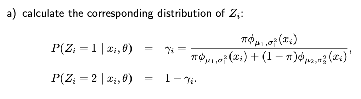
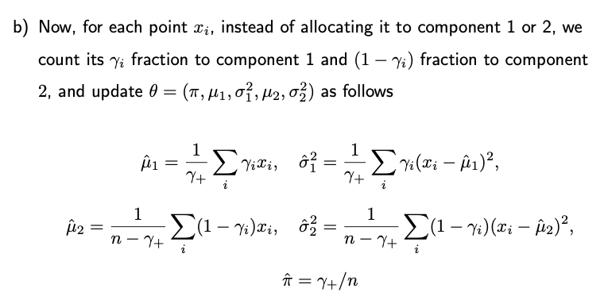

7.2. Mixture Models
7.2.1. Introduction
A mixture model, with K components, describes a distribution whose probability density function (pdf) is formulated
This pdf can be interpreted as a weighted sum of K different pdfs, where each weight, denoted by \(\pi_k\) lies between 0 and 1. The sum of all these weights is equal to one. Each \(f_k(\cdot \mid \theta_k)\) is a specific probability density function parameterized by \(\theta_k\).
Now, how do we generate data from such a mixture model?
To clarify, consider a hypothetical data generation process where K observations are drawn from each of the components \(f_k\) and averaged, given that each weight is \(\pi_k\). However, this depiction is inaccurate. In reality, for a mixture model, each observation stems exclusively from one component.
A more accurate portrayal of the data generation process for a mixture model would involve two steps:
First, generate a lable Z that ranges from 1 to K. This label is derived from a multinomial distribution with \(P(Z=k) = \pi_k\) where k = 1, …, K.
Given Z=k, then generate the observation X from that specific k-th component, \(f_k(x \mid \theta_k)\).
7.2.2. Two-Component Gaussian Mixture
Consider a simple Gaussian mixture model with two components in a one-dimensional space. The probability density function (pdf) of our model is a linear combination of two normal distributions:
where \(\phi_{\mu, \sigma^2} (x)\) represents the (one-dimensional) normal distribution with mean \(\mu\) and variance \(\sigma^2\).
\[\phi_{\mu, \sigma^2} (x) = \frac{1}{\sqrt{2 \pi \sigma^2}} \exp \Big \{ - \frac{(x- \mu)^2}{2 \sigma^2} \Big \}\]
In such a model, the unknown parameters are collectively represented by \(\theta = (\mu_1, \mu_2, \sigma^2_1, \sigma^2_2, \pi)\), consisting of five values: the means and variances for each component, and the mixing weight \(\pi\).
Moving forward, let’s discuss deriving the Maximum Likelihood Estimate (MLE) for these parameters. Given n one-dimensional training samples x_1, …, x_n, the log-likelihood of these samples can be described as the sum of log values of their individual pdfs. The challenge arises when trying to maximize this log-likelihood. While doing so for a single normal distribution yields a closed-form solution, the task becomes complex for a mixture model.
Interestingly, if we knew which component each sample came from, the MLE computation would be straightforward. To simplify, let’s introduce a latent variable Z_i for each observation. This Z_i can be either 1 or 2, indicating which component the observation originates from. As mentioned before, the mixture model can be viewed as a two-stage process:
The likelihood of observing both x_i and z_i can be represented as a product form:
The log-likelihood is given by
This allows us to segment our data based on the components they come from. When estimating parameters for each normal distribution, we essentially revert to the simpler case of single normals.
For example, the MLE for \(\mu_1\), the mean of the first component, is just the average of observations from that component. The variance can be similarly computed. The same logic applies to the second component.
Lastly, the mixing weight \(\pi\) can intuitively be represented as the proportion of observations from the first component. While formal derivation can be achieved through Lagrangian methods, an insightful perspective reveals that this value is essentially the Negative Kullback-Leibler (KL) divergence between two Bernoulli distributions, one with parameter :math:pi and the other with parameter n_1/n. The maximum value for this divergence is zero, which can be achieved by aligning the two distributions. This leads us to \(\hat{\pi} = n_1/n\).
7.2.3. KL Distance
Consider two distributions, p(x) and q(x), defined over the same domain. These distributions might represent continuous density functions across the real line or discrete distributions spanning a finite set of values.
A metric called the Kullback-Leibler (KL) Divergence can be employed to determine the distance between these distributions. It’s given by:
Here, the idea is to compare the likelihood ratio, p(x)/q(x), across the data points and compute their average, using the expectation taken with respect to p. In the case of continuous distributions, this expectation translates to an integral \(\int p(x) \log \frac{p(x)}{q(x)} d x\), whereas for discrete distributions, it’s a summation \(\sum_{j=1}^m p_j \log \frac{p_j}{q_j}\), operating under the governing influence of the numerator’s distribution.
Notably, KL divergence is asymmetrical; switching p and q alters its value. While it’s not a true distance in the mathematical sense, it is a commonly employed metric in statistics and machine learning to gauge the difference between two distributions. Furthermore, it’s always non-negative and reaches zero exclusively when the two distributions are identical (almost surely).
To show that the KL divergence is always non-negative, we employ Jensen’s Inequality, which pertains to expectations of functions. In particular, when a function g is convex, Jensen’s inequality holds:
The equality is achieved when g is linear. By manipulating the KL divergence, we can utilize this inequality and the convexity of the negative logarithm to deduce that the divergence is always greater than or equal to zero. Furthermore, when it equals zero, it implies that the distributions p and q are essentially the same (up to a measure zero set).
since \(\mathbb{E}_{X \sim p} \frac{q(X)}{p(X)} = \int p(x) \cdot q(x)/p(x) dx = \int q(x) d x = 1\) and \(\log (1) =0\).
The phrase “up to a measure zero set” refers to the concept in measure theory where certain subsets of the domain have “no size” or “no volume.” In simpler terms, a set having measure zero means that its total length, area, volume, etc., is zero, even if it contains an infinite number of points. For instance, in the real line, any single point or a finite collection of points has a measure (length) of zero.
This concept becomes important when we are dealing with continuous distributions. For continuous distributions, asserting that two distributions are identical requires precision. Their density functions might differ at a set of points,, but if that set has a measure of zero, it doesn’t influence the integrals (like the expected value) computed from the functions. Hence, for most practical applications, the two distributions are considered identical.
7.2.4. An Iterative Algorithm
Recall the two-component Gaussian mixture model. Imagine that in addition to the data points x_i, we are also given z_i, which indicate which component x_i came from. As discussed before, estimating the model’s parameters would be straightforward.
The heart of our dilemma is that these z_i values are unobserved, or latent. To address this, we can devise an iterative strategy. Starting with an initial guess of our parameters, which encompass the means, variances, and mixing weight π of the Gaussians, we can probabilistically estimate the distribution of Z_i. Then instead of committing a data point entirely to one component, we attribute a fractional count, gamma_i, based on its computed probability. This fraction, lying between 0 and 1, represents the likelihood that belongs to the first Gaussian component.
The process is cyclical: (a) compute the distribution of Z_i, (b) update parameters using weighted counts, then re-estimate the distribution of Z_i using the updated parameters, and so on until convergence.
 {kind=link}
{kind=link}
At the heart of this methodology lies a pivotal question: does this iterative procedure yield the Maximum Likelihood Estimator (MLE) that maximizes the marginal likelihood of our observed data?
This elegant cycle of expectation and maximization forms the basis of the Expectation-Maximization (EM) algorithm. In subsequent sections, we’ll delve into the two main steps of the EM algorithm and demonstrate that this iterative procedure indeed optimizes the marginal likelihood.